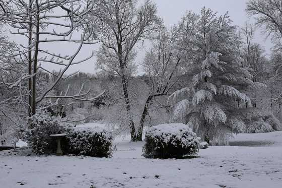
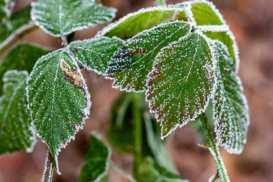
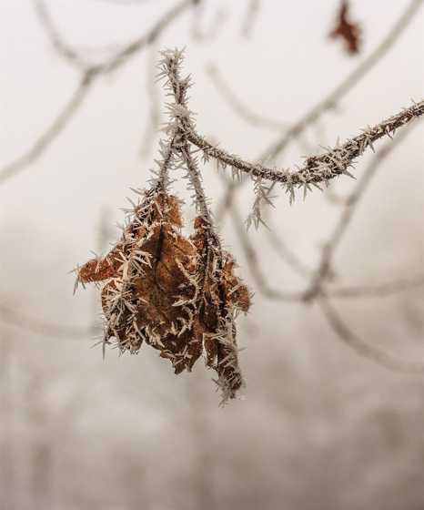
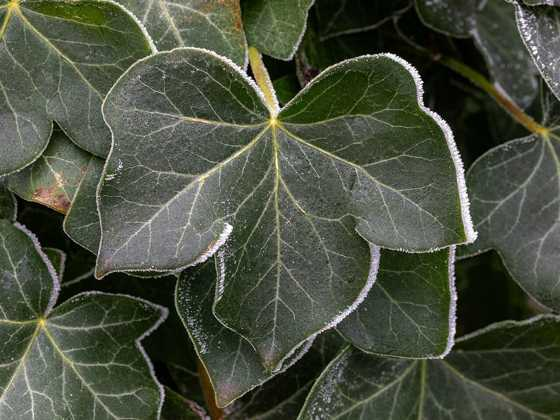
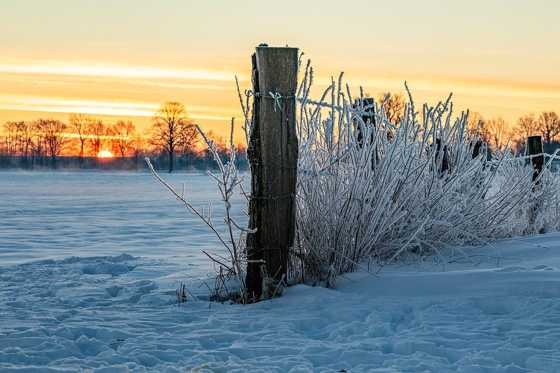
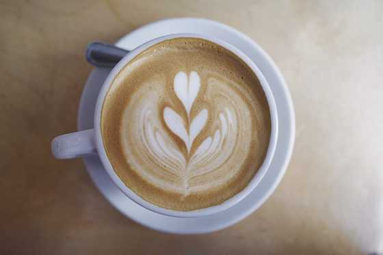
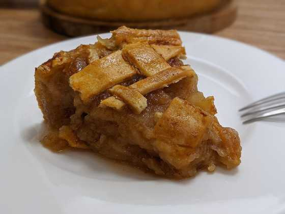
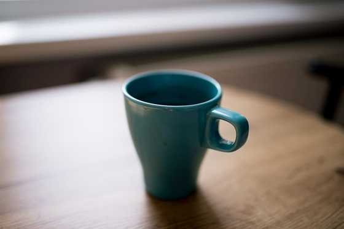

青森県三沢市・幸町のカフェ
安穏(あんのん)のひとときを。
ほっと一息つける場所へ。
CaféANNON ~ 安穏
お店の由来・想い
店名は「安穏」。穏やかに、心安らぐ場所。
CaféANNONのInstagramには、店名が「ANNON~安穏」と表記され、「心安らぐ・癒される・穏やかに」「ほっと一息つける、そんな場所になるように」という言葉が添えられています。忙しい日常のなかで、肩の力を抜いて過ごせる場所。そんな想いが店名に込められていると読み取れます。
情報源: Instagram @cafe.annon(プロフィール)。店名の由来についての詳しい説明は確認できていません。
上記以外の文章(見出しの言い回しなど)は制作側の表現です。







メニュー
クロッフルと、あたたかい一杯。
Instagramのハイライトに「Croffle menu」があり、クロッフル(クロワッサン生地のワッフル)を扱っていることがうかがえます。ほかのメニュー・価格は確認できていないため、下記は準備中です。






口コミ(イメージ例)
こんなひとときを過ごせたら。
イメージ例
仕事帰りに立ち寄って、温かいドリンクでほっとしました。時間がゆっくり流れる感じです。
イメージ例
クロッフルのサクサクとした食感が楽しみで、また行きたくなりました。
イメージ例
静かな空気のなかで本を読んで過ごせて、気持ちが落ち着きました。
上の3件は制作側が作成したイメージ例で、実際のお客様の声ではありません。
アクセス・ご案内
お店のこと(確認できたものだけ)
| 所在地 | 〒033-0011 青森県三沢市幸町１丁目８−１ |
|---|---|
| 電話 | 準備中 |
| 営業時間 | 準備中 |
| 定休日 | 準備中 |
| SNS | Instagram @cafe.annon |
営業時間・メニュー・価格は変更されることがあるため、最新情報はInstagramをご覧ください。